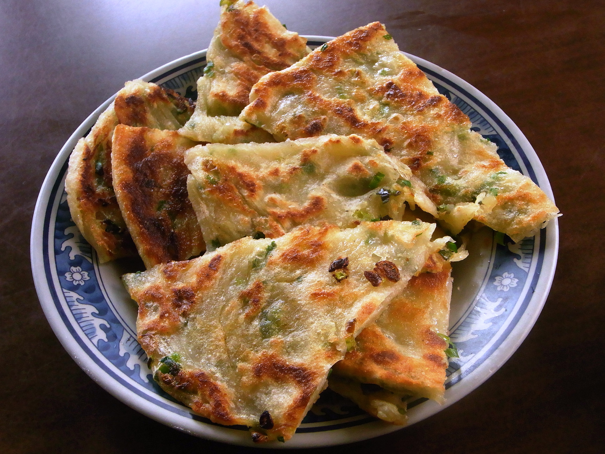

Scallion pancakes, aka scallion pancakes, are a type of dry cake fried with chopped spring onions, salt and spices. It is a traditional home-cooked dish in northern China and is also widely available in restaurants and roadside stalls throughout the country.
Meal prep time : 1 hour 2 minutes
Servings : 8